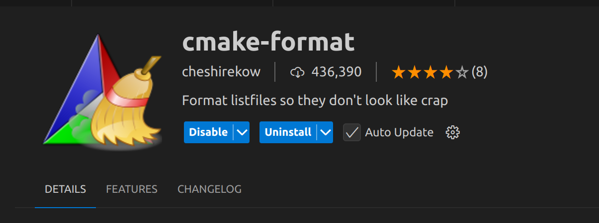
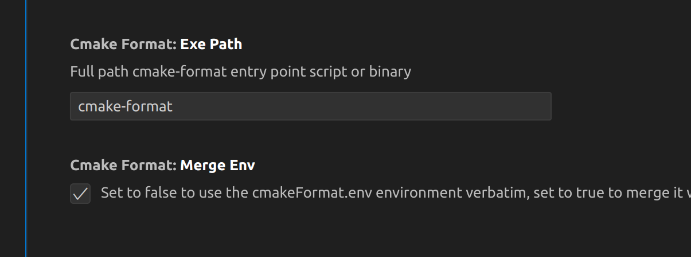

使用 cmake-format 工具
安装运行
安装
1 | pip install cmake-format |
运行格式化
1 | cmake-format -i CMakeLists.txt |
VSCode中安装对应的 cmake-format 插件

安装后检查或设置一下 cmake-foramt 的路径

使用自定义配置文件
cmake-format 支持自定义配置文件，支持.cmake-format.py和.cmake-format.yaml。
配置文件放在项目根目录，cmake-format 会自动加载。如果放在别的地方，也可以通过命令行参数 -c <config_file> 指定配置文件，或在插件设置中填写。
配置文件示例
1 | # ----------------------------- |